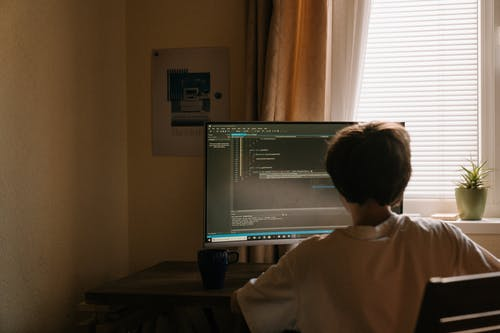

O que fazer para se tornar um programador web
Um desenvolvedor web só precisa de um computador, conexão de Internet e muito conhecimento para começar a trabalhar. As linguagens de programação utilizadas nesse processo de aprendizado é uma das mais fáceis de se aprender.
Além disso, esse profissional pode trabalhar de maneira autônoma construindo sites sob demanda ou se enveredar na carreira corporativa e ocupar cargos de grande responsabilidade nas empresas.
E aí, vamos começar a aprender web development hoje mesmo? As vagas para a próxima turma de dev iniciante da rocketseat estão abertas. Basta clicar aqui, escolher sua cidade e fazer sua inscrição.